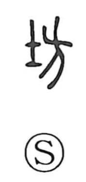

坊

Kun: | On: bou, bo
ward ・ block ・ shop ・ temple ・ monastic quarters ・ boy
Explanation
坊 combines 土, land, with 方 as its phonetic. 方 also has associations with a square and a bounded division of space. A 坊 is a section laid out within the grid of a settlement.
Such a ward had its own gate and an official responsible for it. The word extends to a town district, a market, a shop, or a workplace: an identifiable area where people live or carry on an activity.
Temple precincts were likewise divided into 坊. The word could therefore name monastic quarters or a temple, and the head of one such division was a 坊主. The administrative and religious uses share the organization of space into distinct holdings.